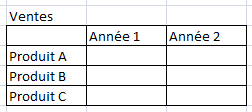
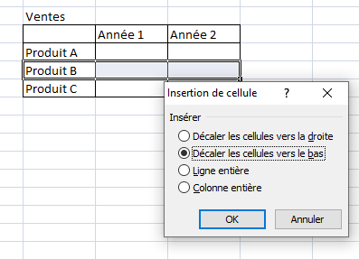
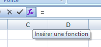
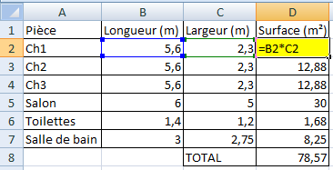
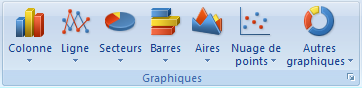
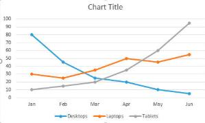

IT - I2D · Fiche outils
IT - I2D · Fiche outilsUtilisation d’Excel
Excel est un tableur : il est là pour stocker et compiler des données. C’est un outil de calcul très intéressant et il permet également de faire des graphes, courbes…
IT - I2D · Fiche outilsExcel est un tableur : il est là pour stocker et compiler des données. C’est un outil de calcul très intéressant et il permet également de faire des graphes, courbes…
Bien réfléchir à la forme du tableau (lignes, colonnes…)

Sélection d’une ligne, clic droit puis « Insertion », vous choisissez ensuite si vous voulez rajouter une ligne au-dessus, en dessous…

Le logiciel met à jour les données automatiquement.
Vous pouvez taper directement la formule : =A2*C2 (vous tapez = puis vous cliquez dans la cellule A2 ; vous tapez * ; puis vous sélectionnez la cellule C2 puis tapez sur « Entrée »)

Beaucoup de calculs existent, un menu vous permet de les choisir si vous écrivez = dans la cellule. En cliquant sur fx, vous avez accès à toutes les formules pré-programmées dans le logiciel.

Pour avoir le total, utilisez la formule SOMME : =SOMME(cellule xx : cellule xx).
Sélectionner votre tableau puis dans l’onglet « Insertion », choisissez votre graphe :

Laissez-vous guider, vous pouvez encore le modifier à la fin si le résultat ne vous convient pas. Si vous paramétrez correctement, vous aurez le titre, la légende, les échelles :

L’avantage est que si les données changent, vous les modifiez dans le tableau et tout s’adapte (sans tout refaire).
Ce site a été réalisé par Abdellah CHELOUAH.